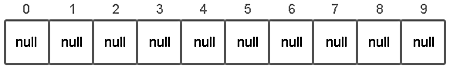
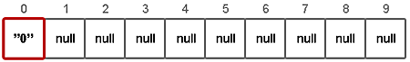
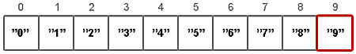
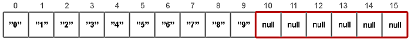
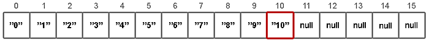
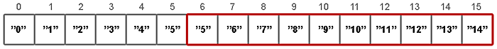
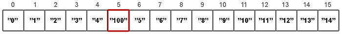

/* Моя кошка замечательно разбирается в программировании. Стоит мне объяснить проблему ей - и все становится ясно. */
John Robbins, Debugging Applications, Microsoft Press, 2000

/* Моя кошка замечательно разбирается в программировании. Стоит мне объяснить проблему ей - и все становится ясно. */
John Robbins, Debugging Applications, Microsoft Press, 2000
Знакомство с ArrayList
Метод indexOf()
Просмотр всех элементов через цикл
Метод contains()
Метод remove() - удаление элемента
Метод set() - замена элемента
Метод clear() - очистка массива
Метод toArray() - конвертируем в обычный массив
Сколько раз совпадают элементы
Интерфейс List
Структура данных в картинках
Усвоив, что такое массивы, можно поближе изучить java.util.ArrayList. По названию пространства имён видно, что данный класс относится к Java.
ArrayList - автоматически расширяемый массив. Вы можете работать с массивом, но при этом не используются квадратные скобки.
Массивы имеют фиксированную длину, и после того как массив создан, он не может расти или уменьшаться. ArrayList может менять свой размер во время исполнения программы, при этом не обязательно указывать размерность при создании объекта. Элементы ArrayList могут быть абсолютно любых типов в том числе и null.
Работать с ArrayList просто: создайте нужный объект, вставляйте созданные объекты методом add(), обращайтесь к ним методом get(), используйте индексирование так же, как для массивов, но без квадратных скобок. ArrayList также содержит метод size(), который возвращает текущее количество элементов в массиве.
Рассмотрим на примерах.
ArrayList catnamesList = new ArrayList();
catnamesList.add("Васька");
editResult.setText((CharSequence) catnamesList.get(0));
Запускаем программу и видим, что в текстовом поле отобразилось имя кота Васьки. Что же произошло? Мы объявили экземпляр класса ArrayList под именем catnamesList и через метод add() добавили имя. Массив стал содержать одну строку и мы можем в этом убедиться, когда выводим в текстовом поле первый элемент массива через индекс, равный 0.
Продолжим опыт. Перенесём объявление класса на уровень нашего основного класса и добавим через кнопку ещё два имени.
// остальной код
TextView textViewInfo;
ArrayList catnamesList = new ArrayList();
@Override
public void onCreate(Bundle savedInstanceState) {
super.onCreate(savedInstanceState);
setContentView(R.layout.activity_main);
butGetResult = (Button) findViewById(R.id.buttonGetResult);
editResult = (EditText) findViewById(R.id.editText);
textViewInfo = (TextView) findViewById(R.id.textViewInfo);
catnamesList.add("Васька");
editResult.setText((CharSequence) catnamesList.get(0));
}
public void onClick(View v) {
catnamesList.add("Мурзик");
catnamesList.add("Рыжик");
editResult.setText((CharSequence) catnamesList.get(1));
}
Что теперь произошло? В методе onCreate() как прежде добавляется одно имя, которое выводится в текстовом поле. При нажатии на кнопку мы добавляем ещё два имени, а в текстовом поле выводим имя второго кота через метод catnamesList.get(1).
Хорошо, мы знаем, что добавили трёх котов и поэтому можем обращаться через индекс 0, 1 или 2. А если котов стало слишком много, и мы запутались в их количестве? Тогда нужно вызвать метод size(), который вернёт общее число элементов массива. В этом случае, чтобы получить имя последнего кота в массиве, нужно получить размер массива и отнять единицу.
editResult.setText((CharSequence) catnamesList.get(catnamesList.size() - 1));
Вроде бы всё замечательно. Но Eclipse выводит предупреждающие значки напротив нашего кода. Почему?
Мы знаем, что у кота есть четыре лапы и хвост. Создадим отдельную переменную для количества лап и попробуем запихнуть их в массив имён. Выглядит как бред, но Java не ругается на наши действия. Вы можете через метод size() убедиться, что размер массива увеличился. Но при попытке вывести последний элемент получим ошибку.
public void onClick(View v) {
catnamesList.add("Мурзик");
catnamesList.add("Рыжик");
int paws = 4; // четыре лапы
catnamesList.add(paws);
editResult.setText((CharSequence) catnamesList.get(catnamesList.size() - 1));
}
Чтобы вы не совершали подобных ошибок, был придуман следующий подход. Когда вы создаёте новый объект для массива, то в угловых скобках сразу указываете, какой тип собираетесь использовать.
ArrayList<String> catnamesList = new ArrayList<String>();
Как только вы исправите пример, то строчка catnamesList.add(paws); будет сразу подчёркнута красной линией. Java поняла, что мы хотим использовать в массиве только строки, а не числа. Поэтому, вы уже не совершите глупых ошибок. Удалите неправильную строку, остальное можно оставить без изменений.
ArrayList<String> catnamesList = new ArrayList<String>();
@Override
public void onCreate(Bundle savedInstanceState) {
super.onCreate(savedInstanceState);
setContentView(R.layout.activity_main);
butGetResult = (Button) findViewById(R.id.buttonGetResult);
editResult = (EditText) findViewById(R.id.editText);
textViewInfo = (TextView) findViewById(R.id.textViewInfo);
catnamesList.add("Васька");
editResult.setText((CharSequence) catnamesList.get(0));
}
public void onClick(View v) {
catnamesList.add("Мурзик");
catnamesList.add("Рыжик");
// добавим ещё одного наглого кота. Он очень настаивал
catnamesList.add("Барсик");
// выводим имя последнего кота из массива
editResult.setText((CharSequence) catnamesList.get(catnamesList.size() - 1));
// размер массива
//editResult.setText("" + catnamesList.size());
}
Теперь Eclipse не ругается, и мы можем свернуться калачиком и поспать.
Проснулись? Продолжим.
Такая форма записи с угловыми скобками говорит о том, что мы использовали generic-класс (дженерик или обобщение) с типизированными параметрами.
Предположим, мы внимательно следим за Рыжиком. Когда он был последним, то его легко было вычислить. Зная размер массива, мы вычитали единицу и получали к нему доступ. Но потом мы стали добавлять в массив других котов и уже не сможем понять, где теперь наш Рыжик. Но выход всегда есть. Существует метод indexOf(), который ищет подходящий элемент и выводит его индекс.
int index = catnamesList.indexOf("Рыжик");
// выводим имя кота и его номер в массиве
editResult.setText("Рыжик числится под номером " + index);
Не забываем, что отсчёт массива идёт с 0, если индекс равен 2, значит он является третим в массиве.
Чтобы вывести всех усатых-полосатых на чистую воду, используем цикл for:
String catname = "";
for (int i = 0; i < catnamesList.size(); i++) {
catname = catname + catnamesList.get(i) + " ";
}
editResult.setText("Все коты: " + catname);
Или укороченная запись:
String catname = "";
for (String item : catnamesList) {
catname = catname + item + " ";
}
editResult.setText("Все коты: " + catname);
Чтобы узнать, есть в массиве какой-либо элемент, можно воспользоваться методом contains(), который вернёт true или false:
editResult.setText(catnamesList.contains("Бобик") + "");
Понятно, что в нашем массиве никаких бобиков и барбосов быть не может, поэтому появится надпись false.
Для удаления элемента из массива используется метод remove(). Можно удалять по индексу или по объекту:
catnamesList.remove(0); // удаляем по индексу
catnamesList.remove("Васька"); // удаляем по объекту
Чтобы заменить элемент в массиве, нужно использовать метод set() с указанием индекса и новым значением. Предположим, вы обнаружили, что у вас не кот Мурзик, а кошка Мурка. Нет проблем.
catnamesList.add("Васька");
catnamesList.add("Мурзик");
catnamesList.add("Рыжик");
catnamesList.set(1, "Мурка");
editResult.setText(catnamesList.get(1) + "");
Для очистки массива используется метод clear():
catnamesList.clear();
Также можно сконвертировать из нашего списка в обычный массив и выполнить другие операции. Читайте документацию.
ArrayList<String> myArrayList = new ArrayList<String>();
myArrayList.add("Россия");
myArrayList.add("Польша");
myArrayList.add("Греция");
myArrayList.add("Чехия");
String[] myArray = {}; // конвертируем ArrayList в массив
myArray = myArrayList.toArray(new String[myArrayList.size()]);
Конвертация в массив может понадобится для ускорения некоторых операций, передачи массива в качестве параметра методам, которые требуют именно массив и другие причины.
В списочном массиве значения вполне могут совпадать. Например, среди котов попадаются однофамильцы и мы их спокойно можем запихнуть в ArrayList. Но сколько раз повторяются одинаковые элементы?
ArrayList<String> numbers = new ArrayList<String>();
numbers.add("Мурзик");
numbers.add("Васька");
numbers.add("Мурзик");
int count = Collections.frequency(numbers, "Мурзик"); // получим результат 2
textOut.setText(String.valueOf(count)); // выводим результат в TextView
java.util.List является интерфейсом и его можно использовать вместо ArrayList следующим образом:
List<String> catnamesList = new ArrayList<String>();
Как видите, мы заменили ArrayList на List, но при этом в объявлении оставили new ArrayList(). Всё остальное остаётся без изменений. Кстати, этот способ является рекомендуемым.
Сам List реализует более общий интерфейс коллекции Collection и можно было даже написать:
Collection<String> catnamesList = new ArrayList<String>();
Но у Collection нет методов set() и get(), поэтому работать с таким интерфейсом не очень удобно.
Для создания массива можно не только добавлять по одному объекту через метод add(), но и сразу массив через метод Arrays.asList().
Оставим пока в покое котов и создадим массив из объектов Integer.
List<Integer> numlist = Arrays.asList(1, 2, 5, 9, 11);
editResult.setText(numlist.get(2) + ""); // выводит число 5
Но у данного способа есть недостаток. Если вы определили массив таким образом, то уже не можете вставлять или удалять другой элемент (методы add() и delete()), хотя при этом можете изменять существующий элемент.
List<Integer> numlist = Arrays.asList(1, 2, 5, 9, 11);
numlist.set(2, 33); // так можно
//numlist.add(34); // нельзя, ошибка во время исполнения
editResult.setText(numlist.get(2) + "");
С ArrayList работать проще и удобнее, чем с массивами. Можно без проблем добавлять новые элементы, в том числе и в середину листа. А в случае использования обычного массива вам придётся заново выделять память и перезаписывать элементы, так как размер массива поменять нельзя, после того как была выделена память.
Работа с массивом быстрее и можно использовать массив, если точно знаете заранее размер массива и вам не придется его динамически менять, делать вставки и т.д.
Теперь, когда вы получили представление об ArrayList, заглянем за кулисы и посмотрим, как данные хранятся в этом объекте. Источник
ArrayList<String> list = new ArrayList<String>();
Только что созданный объект list содержит свойства elementData и size.
Хранилище значений elementData есть ни что иное как массив определенного типа (указанного в generic), в нашем случае String[]. Если вызывается конструктор без параметров, то по умолчанию будет создан массив из 10-ти элементов типа Object (с приведением к типу, разумеется).
elementData = (E[]) new Object[10];

Добавим новый элемент:
list.add("0");

Внутри метода add(value) происходят следующие вещи:
1) проверяется, достаточно ли места в массиве для вставки нового элемента;
ensureCapacity(size + 1);
2) добавляется элемент в конец (согласно значению size) массива.
elementData[size++] = element;
Если места в массиве не достаточно, новая ёмкость рассчитывается по формуле (oldCapacity * 3) / 2 + 1. Второй момент это копирование элементов. Оно осуществляется с помощью native-метода System.arraycopy(), который написан не на Java.
// newCapacity - новое значение емкости
elementData = (E[])new Object[newCapacity];
// oldData - временное хранилище текущего массива с данными
System.arraycopy(oldData, 0, elementData, 0, size);
Ниже продемонстрирован цикл, поочередно добавляющий 15 элементов:
list.add("1");
Продолжаем добавлять 2, 3, 4, ...
list.add("9");

list.add("10");
При добавлении 11-го элемента, проверка показывает что места в массиве нет. Соответственно создается новый массив и вызывается System.arraycopy().

После этого добавление элементов продолжается.

Рассмотрим добавление в «середину» списка.
list.add(5, "100");
Добавление элемента на позицию с определенным индексом происходит в три этапа:
1) проверяется, достаточно ли места в массиве для вставки нового элемента;
ensureCapacity(size+1);
2) подготавливается место для нового элемента с помощью System.arraycopy();
System.arraycopy(elementData, index, elementData, index + 1, size - index);

3) перезаписывается значение у элемента с указанным индексом.
elementData[index] = element;
size++;

Как можно догадаться, в случаях, когда происходит вставка элемента по индексу и при этом в вашем массиве нет свободных мест, то вызов System.arraycopy() случится дважды: первый в ensureCapacity(), второй в самом методе add(index, value), что явно скажется на скорости всей операции добавления.
В случаях, когда в исходный список необходимо добавить другую коллекцию, да еще и в «середину», стоит использовать метод addAll(index, Collection). И хотя, данный метод скорее всего вызовет System.arraycopy() три раза, в итоге это будет гораздо быстрее поэлементного добавления.
Удаление элементов
Удалять элементы можно двумя способами:
— по индексу remove(index)
— по значению remove(value)
С удалением элемента по индексу всё достаточно просто:
list.remove(5);
Сначала определяется какое количество элементов надо скопировать:
int numMoved = size - index - 1;
Затем копируем элементы используя System.arraycopy():
System.arraycopy(elementData, index + 1, elementData, index, numMoved);
Уменьшаем размер массива и забываем про последний элемент:
elementData[--size] = null; // Let gc do its work
При удалении по значению, в цикле просматриваются все элементы списка, до тех пор пока не будет найдено соответствие. Удален будет лишь первый найденный элемент.
При удалении элементов текущая величина capacity не уменьшается, что может привести к своеобразным утечкам памяти. Поэтому не стоит пренебрегать методом trimToSize().